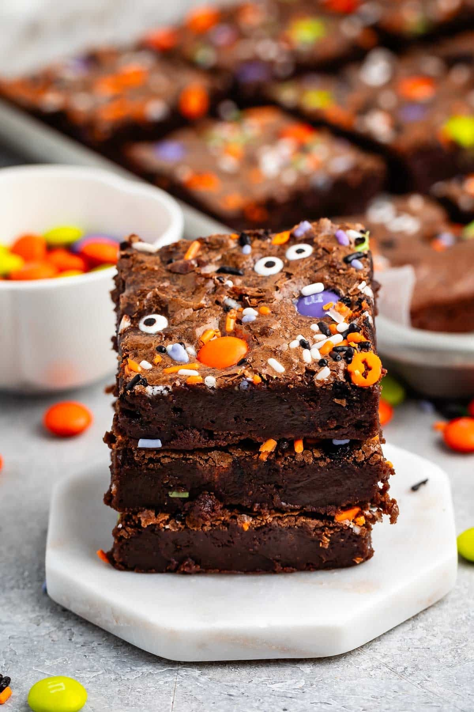
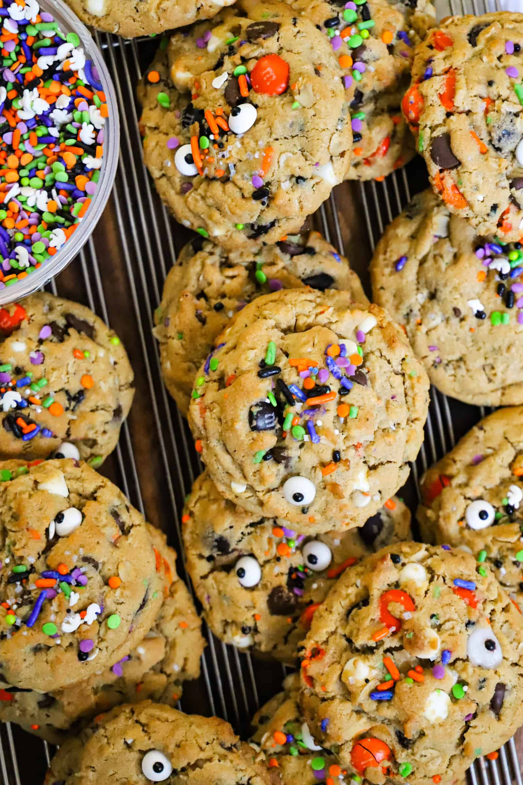

Halloween Brownies

Description
Fudgy, thick, warm brownies. Perfect for fall weather and halloween parties.
Prep time: 15 minutes
Cook time: 25 to 30 minutes
Total time: 40 to 45 minutes
Servings: As many pieces you can cut!
Ingredients
- 4 oz unsweetened baking chocolate,
- 1/2 cup (1 stick) unsalted butter
- 1 cup granulated sugar
- 1/2 cup unsweetened cocoa powder
- 2 large eggs
- 1 teaspoon vanilla extract
- 1/2 cup all-purpose flour
- 1/4 teaspoon salt
- Decorations: Halloween M&Ms, Halloween sprinkles, candy corn, and edible candy eyeballs
Steps
- Preheat your oven to 350°F. Line an 8x8 inch baking pan with parchment paper
- Melt the unsweetened baking chocolate and butter together. Stir until smooth.
- Whisk in the sugar and cocoa powder until well combined.
- Add the eggs and vanilla extract and mix until fully mixed.
- Mix in the flour and salt just until no dry streaks remain. Do not overmix.
- Pour the batter into a pan and spread it evenly.
- Bake for 25 to 30 minutes.
- Let the brownies cool completely in the pan, then cut into squares.
- Decorate with Halloween M&Ms, sprinkles, candy corn, and edible candy eyeballs.
Halloween Monster Cookies

Description
Thick, soft, and chewy monster cookies packed with peanut butter, oats, chocolate chips, M&Ms, and sprinkles.
Prep time: 15 minutes
Cook time: 11 to 13 minutes
Total time: 26 to 28 minutes
Servings: ~16 cookies
Ingredients
- 1/2 cup unsalted butter, softened at room temperature
- 1/2 cup creamy peanut butter
- 3/4 cup brown sugar
- 1/4 cup granulated cane sugar
- 1 large whole egg
- 1 large egg yolk
- 1 1/4 cups all-purpose flour
- 1 cup old-fashioned oats
- 1 tablespoon cornstarch
- 1 teaspoon baking soda
- 1/2 teaspoon salt
- 1 teaspoon vanilla extract
- 2/3 cup chocolate chips
- 1/3cup white chocolate chips
- 1 cup Halloween colored M&Ms
- 3 tablespoons Halloween sprinkle mix
- Sprinkle candy eyeballs
Steps
- Preheat the oven to 375°F. Line two large baking sheets with parchment paper.
- In a bowl, whisk together the flour, oats, cornstarch, baking soda, and salt. Set aside.
- In a large mixing bowl, use an electric mixer to cream the softened butter, brown sugar, and granulated sugar until light and fluffy.
- Add the egg and egg yolk and mix until combined. Add the peanut butter and vanilla extract, then mix on medium speed until fully incorporated.
- Add the dry ingredients to the wet ingredients and mix on low speed just until combined. Do not overmix.
- When just a few streaks of flour remain, fold in the semi-sweet chocolate chips, white chocolate chips, Halloween M&Ms, and Halloween sprinkles until evenly distributed.
- Scoop the dough with a 2-tablespoon cookie scoop (or large spoon) onto the prepared baking sheets, spacing them about 2 inches apart. Optionally add a few more sprinkles on top.
- Bake for 11 to 13 minutes. Immediately after removing from the oven, gently press 1 to 2 candy eyeballs onto each cookie
- Let it cool down